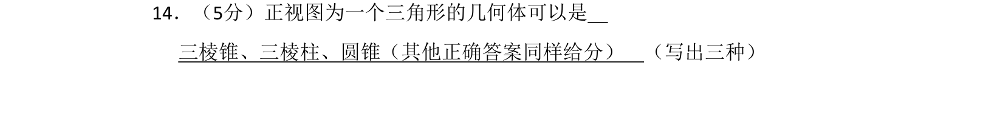
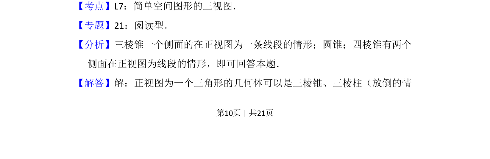
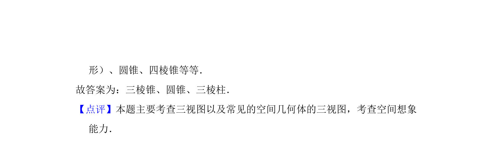

考点：简单空间图形的三视图 空间想象

本题要求根据正视图为三角形写出三种可能的几何体，考查简单空间几何体的三视图识别。


📄 原 PDF 第 10 页：
素材/真题/吉林/2008-2024·（吉林）数学高考真题/2010年高考数学试卷（理）（新课标）（解析卷）.pdf
14．（5分）正视图为一个三角形的几何体可以是 三棱锥、三棱柱、圆锥（其他正确答案同样给分） （写出三种）
【考点】L7：简单空间图形的三视图．菁优网版权所有 【专题】21：阅读型． 【分析】三棱锥一个侧面的在正视图为一条线段的情形；圆锥；四棱锥有两个 侧面在正视图为线段的情形，即可回答本题． 【解答】解：正视图为一个三角形的几何体可以是三棱锥、三棱柱（放倒的情